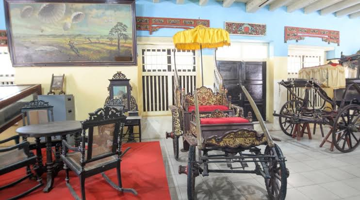
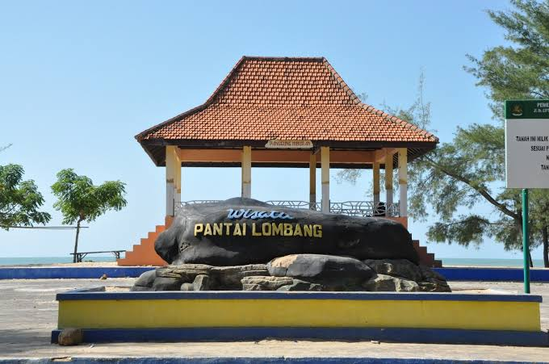

Museum Keraton Sumenep
Museum keraton merupakan tempat bersejarah yang biasa di gunakan sebagai tempat tinggal oleh para raja di jaman kepemimpinannya.
Last updated 3 mins ago

Masjid Jamik Sumenep
Masjid ini berdiri menghadap alun-alun Sumenep dan menjadi simbol masuknya Islam di Kabupaten Sumenep. Masjid Jamik Sumenep merupakan salah satu bangunan 10 masjid tertua dan mempunyai arsitektur yang khas di Nusantara.
Last updated 3 mins ago

Pantai Lombang
Pantai indah dengan pasir putih yang halus dan dikelilingi oleh pepohonan cemara udang yang rindang.
Last updated 3 mins ago
Pantai Gili Labak
Pantai ini memiliki fasilitas lengkap untuk wisatawan. Diantaranya fasilitas penginapan, warung makan, toilet, dan mushola.
Last updated 3 mins ago